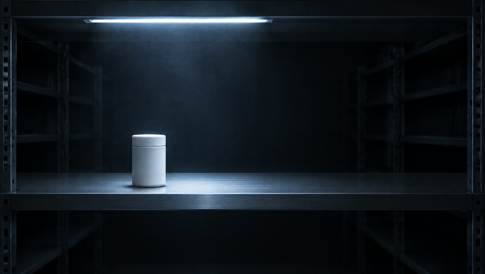

These are not accidental diseases.
Obesity, type 2 diabetes, cardiovascular disease and metabolic disorders are now the leading cause of death and of health spending worldwide. They are not bad luck. They are built out of ordinary days.
They are diseases of daily life.
The strongest lever available is not medical.
It is not technological either. It is the quality of what you buy, every day.
- 01What you eat
- 02What you give your children
- 03What you put on your skin
- 04What you clean your home with
Repeated thousands of times a year, those decisions set your metabolic health, your exposure to sugars and additives, your hormones, and how your children develop.
More choice. Worse choosing.
Information has never been this abundant. Choosing well has never been this hard.
Buried in information that does not help
Contradictory advice from every direction
Labels and claims nobody can verify
More options than any person can hold
Both of the usual answers fall short.
A label, not a verdict.
- Organic is not low sugar
- Organic is not right for a child
- Organic is not nutritionally relevant
You are still abandoned in the aisle, only in a more expensive one.
The right instinct, the wrong moment.
- Slow, and it costs you every trip
- Piecemeal, one barcode at a time
- Still dependent on endless aisles
It corrects after you have already picked the thing up. It never simplifies the shelf.
The problem is not willpower. The problem is not information.
The problem is the absence of a filter you can trust, applied at the moment you buy.
The hidden cost is not money. It is mental load.
Four rules, applied the same way every time.
Curated by default
No endless aisles. No artificial depth. If it is here, it already passed.
Science over labels
Organic is not a sufficient criterion. Vegan, keto and organic are not guarantees. Ingredients, doses and real effects decide. Nothing enters without a rational justification.
No hype tolerance
No trending superfood without grounds. No miracle claims. No borderline wording. Trends pass. Physiology stays.
Family safe by design
A parent should be able to buy without doubting, justifying or explaining. If it is not acceptable for a child, it is not acceptable at all.
Everything here is already filtered.
Twelve per product type. No more.
Twelve is enough to respect real differences in taste, budget, diet and conviction. It is not enough to create noise.
Twelve is not a marketing number. It is a cognitive ceiling.
Hold the button to run the filter
Illustrative. The marks stand for candidates, not for named products.
Five categories. Everything a family actually buys.
- Food & Drinks
- Breakfast, drinks, snacks, staples, and the things you eat for pleasure.
- Fresh & Raw
- Fruit and vegetables with a readable origin. If it is here, you can give it to your family without hesitating.
- Sport & Nutrition
- Supplements, protein, hydration. Clean formulations and doses that do something.
- Body & Hygiene
- Daily body care and hygiene. Zero tolerance on contested substances.
- Home Essentials
- Laundry, dish soap, cleaners, paper. Clean for your home, not just your shelves.
What you need, when you need it. Only the essentials.
What we refuse, and what we believe.

We refuse
- That eating well has to be complicated
- That it should be reserved for experts
- That organic, natural or clean are enough on their own
We believe
- Science should outrank marketing
- Fewer choices are usually better choices
- Protecting your family should not be a daily fight
Nothing here is here by accident. Every product has been selected, tested and understood. You do not need to scan, compare or second guess.
You can simply choose.
The questions worth asking first.
- Why trust your filter more than the app I already do not trust?
- Because you can read ours. Every rule is published, and so is the reason a product was turned down. A filter you cannot inspect is just another opinion.
- Is this another good and bad scoring system?
- No. Nothing gets a score out of a hundred. A product is either defensible or it is not here.
- Is this extreme?
- No. Family first, not radical. This is not built for ultra performers and it is not a club for obsessives. It is for ordinary weeks.
- Who decides?
- A published method, applied the same way to every product, including the popular ones. Selling well is not a criterion.
- What if my favourite product is not on the list?
- Then it did not pass, and you can read exactly why.
Be there when the first index opens.
One email when it is ready. Nothing else, ever.
You are on the list.
This form is not connected yet, so nothing is sent or stored.